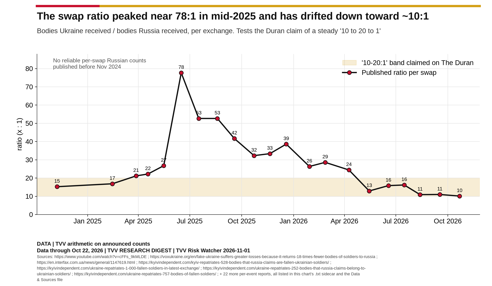
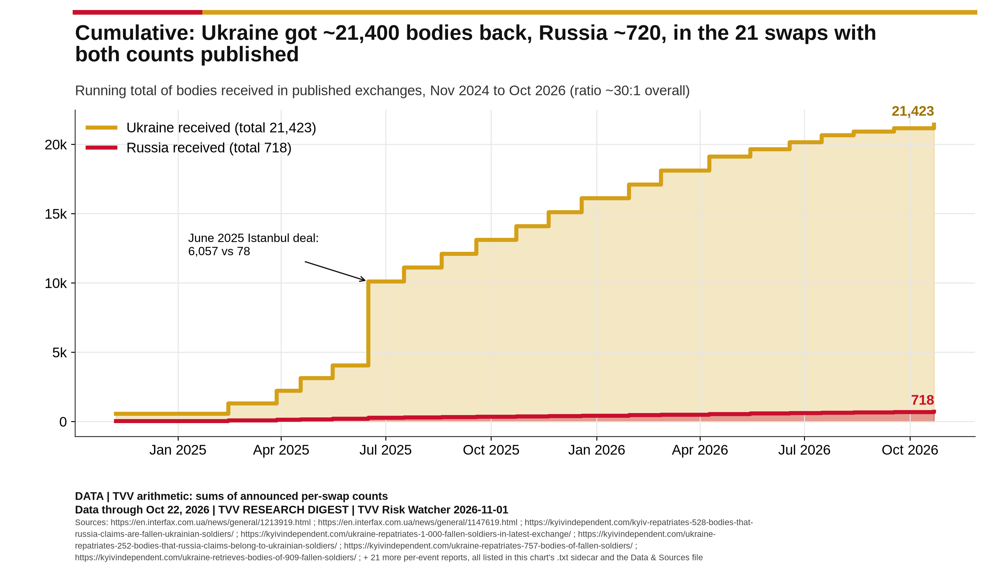
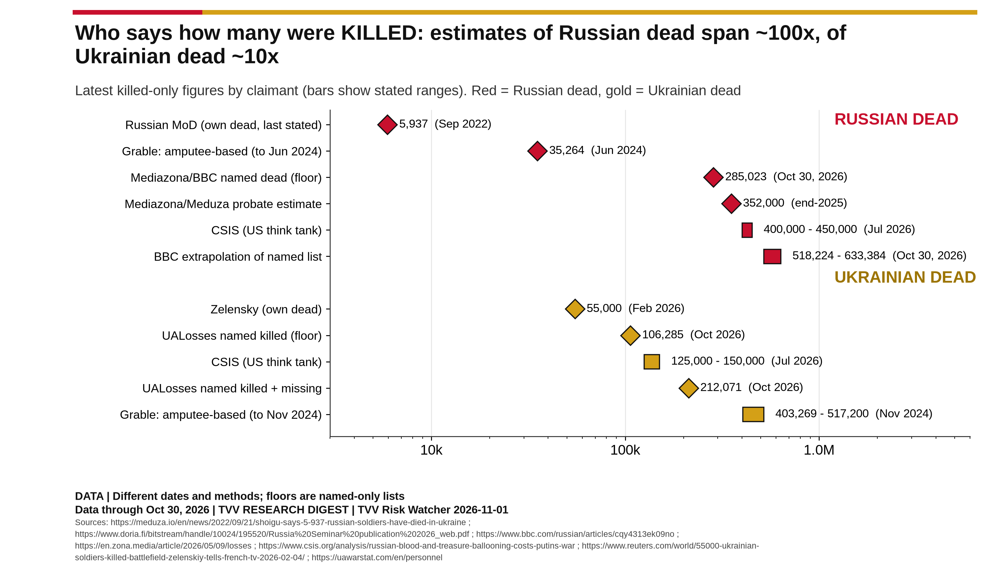
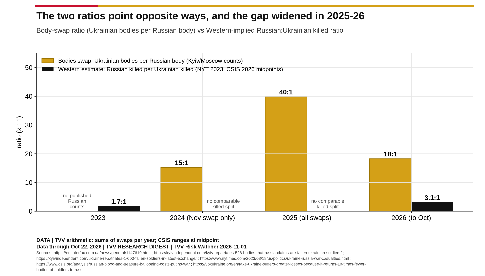

TVV Focus: Ukraine and Russia Casualty Claims. Who counts what, 2022-2026
TVV RESEARCH DIGEST | Risk Watcher special entry | 2026-11-01 v1.0
Bottom line
- Body swaps are lopsided, and that part is not in dispute. Every published exchange since November 2024 returned at least 10 Ukrainian bodies per Russian body. In the 21 swaps where both governments gave counts, Ukraine received 21,423 and Russia 718, about 30:1 (TVV sum, chart 2).
- What the ratio means is disputed. A swap counts the bodies each side holds, not the deaths each side suffered. The side that gains ground recovers more of the enemy's dead (VoxUkraine). Kyiv also says some returned bodies were Russian (Interfax-Ukraine).
- Both governments understate their own dead. Moscow's last own toll was 5,937 (September 2022), while 285,023 Russian dead are now named by Mediazona and BBC Russian. Zelensky said 55,000 Ukrainian soldiers had been killed (February 2026), while the volunteer UALosses database names 106,285 killed and 105,786 missing.
- The West has leaned toward Kyiv's numbers. Western estimates of Russian casualties rose from 300,000 (August 2023) to 1.4-1.5 million (2026), close to the Kyiv General Staff's 1.59 million claim. Western estimates of Ukrainian casualties (500,000-625,000) are about a third of Moscow's claim (more than 1.5 million).
- Recent vs earlier: swaps were small before 2025. In 2025 they surged to 16,301 bodies, with ratios up to 78:1. Since May 2026 they are near 10:1. Meanwhile the Western-implied death ratio has moved further in Russia's disfavour (chart 8).
What The Duran said, and how it checks out
The Duran, episode 2662 ("West Casualty Narrative Exposed", posted November 1, 2026), from about 17:30, with Alex Christoforou (host) and Alexander Mercouris.
Claim (who) | What the data shows | Verdict |
Last swap, about a week ago, was 10:1 (Christoforou) | October 22: 252 bodies to Ukraine, 25 to Russia (10.1:1). | True |
The ratio has held at 10:1 to 20:1 for 24-30 months (Christoforou) | Every published swap since November 2024 is at least 10:1. But 2025 ran 15-78:1, and only mid-2026 fell into the 10-20 band. Earlier Russian counts were mostly not published. | Partly true (floor holds; band too narrow) |
The ratio is confirmed and "not disputed by anybody" (Christoforou) | The counts Ukraine received are confirmed by Kyiv. What they mean is disputed, and Kyiv says some bodies were Russian (about 20 found in 2025). | Counts yes; meaning disputed |
Neither side publishes its casualty totals (Mercouris) | Zelensky gave 55,000 killed (February 2026). Russia has given no total since 5,937 in 2022. | Mostly true |
Western and British media do not report the body exchanges (Mercouris) | BBC, Reuters and others report swaps with counts (see Sources). | False |
A King's College researcher (Grable, Finnish National Defence University volume) finds Russian losses heavily overstated and Ukrainian losses understated (Mercouris) | Accurate summary. It is a PhD candidate's conference chapter, not a peer-reviewed journal paper. It uses amputee multipliers. Its 12.46:1 swap ratio cites a Telegram post. Its 35,264 Russian dead to June 2024 is below the 44,600 already named by February 2024. | Fairly described; weak evidence |
Russian losses may be up to 90% lower than the West believes (Mercouris) | 90% below CSIS's 400,000-450,000 dead would be 40,000-45,000, under the 285,023 Russian dead already named. | Not supported |
Both sides of the argument
- Ratio reflects deaths (Grable; pro-Russian and some Western commentators): Grable, FNDU Russia Seminar 2026 concludes that Ukrainian dead are "very probably higher" than most estimates and likely exceed Russian dead. He puts Ukrainian dead at 403,269-517,200 (to November 2024). On X, the ratio is widely shared as evidence (e.g. @OlgaBazova, @SeosQuinn).
- Ratio reflects the battlefield (VoxUkraine; Kyiv; skeptics): whoever holds the ground collects the bodies. Kyiv does not publish how many bodies it has handed over or holds. Skeptics on X include @JavelinFella and @Jonas_thePhysio ("not peer-reviewed"). Even a pro-Russian account, @SU_57R, says the real casualty ratio is "not 10:1".
- TVV read: the swap ratio is the only hard bilateral number and deserves more Western coverage, but it is not a death ratio. The named-dead floors (285,023 Russian; 106,285 killed plus 105,786 missing Ukrainian) rule out Moscow's 5,937, a 90% cut to Western Russian estimates, and Kyiv's 55,000.

Chart 4. Per-swap ratio vs the 10-20:1 band claimed on The Duran. Ratio of bodies received, not of deaths.

Chart 2. Running totals in the 21 swaps where both sides published counts. Kyiv's all-war total is higher (Budanov: more than 26,000).

Chart 7. Killed-only figures by claimant. Diamonds are single figures, boxes are stated ranges. Dates differ.

Chart 8. If swaps measured deaths, Ukraine would be losing 18-40 soldiers per Russian. Western estimates say Russia loses about 3 per Ukrainian. Both cannot be death ratios.
What changed recently (2025-26 vs 2022-24)
- Swap volume: 790 (2022), 968 (2023) and 3,380 (2024) bodies came home, then 16,301 in 2025 and more than 5,300 in 2026 to October 22 (Slovo i Dilo). Published Russian counts begin in late 2024, so the earlier "pauses" can't be ratio-tested.
- Western ratio widened the other way: US officials implied about 1.7 Russian dead per Ukrainian in 2023 (120,000 vs 70,000, NYT). CSIS implies about 3:1 in 2026 (400,000-450,000 vs 125,000-150,000, CSIS). The gap between the two pictures is now the widest of the war.
- Named-dead counts accelerated: Russian named dead rose from 95,323 (February 2025) to 285,023 (October 2026). UALosses rose from 70,494 to 106,285 killed. Each side's own lists now exceed what its government admits.
- Civilians: UN-verified civilian deaths in January-September rose from 1,607 (2024) to 2,570 (2026), and injuries from 6,764 to 15,211 (OHCHR). Full chart set: 9 graphs in the companion collection.
What could not be sourced
- Kyiv's count of Russian bodies handed over in total, and Russian per-swap counts before November 2024. Swaps in December 2024 and January 2025 have no published Russian count. Lavrov's 2025 figure (more than 9,000 handed over vs 143 received) conflicts with Kyiv's 16,301.
- A consistent prisoner-of-war exchange series, and any official definition of the Kyiv General Staff's "personnel losses". Western estimate methods are not public.
Sources
Every per-swap report behind the charts (60 URLs) is listed in the companion Data & Sources file and in each chart's .txt sidecar.